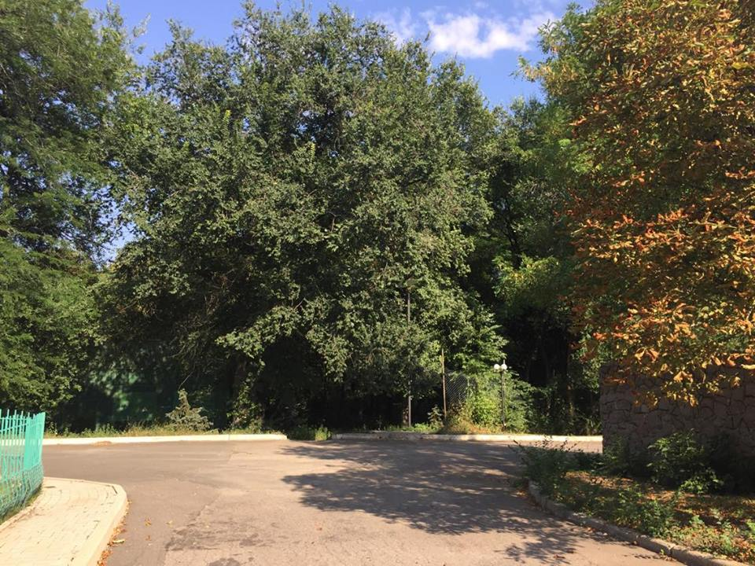
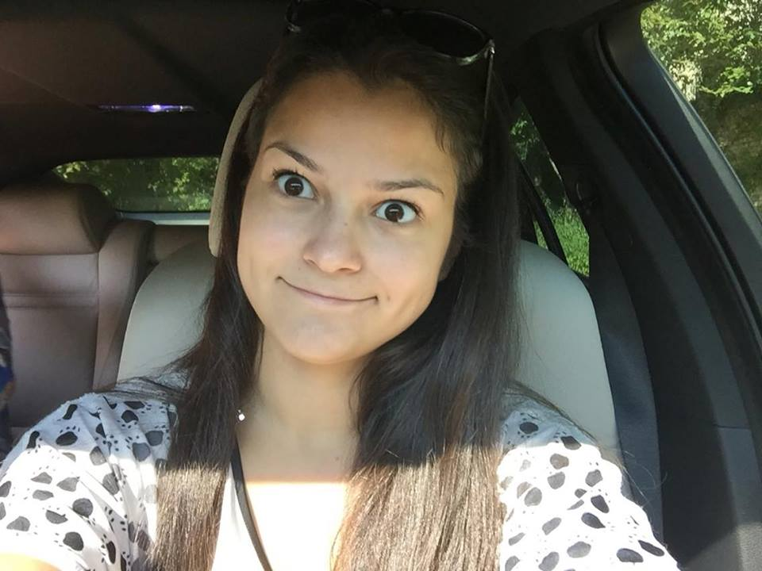

Осень
сразу скажу что встревожило... заразил ты предрассудками. то что ты сказал в машине про актерскую игру. я верю, что это просто был ляп и ты действительно так не считаешь. но видишь, маленькая капелька беспокойства присутствует. второе, это то, что ты думаешь что мне снесет крышу... если бы ты знал, как это не так... если бы ты знал, что сейчас чувствую... какой баланс и гармонию. реальность и нереальность, все четко, без помутнения. мне иногда самой страшно от того, что в голове все настолько хорошо. ты скажешь что так не бывает. наверное везде есть исключения. так удивительно... я могу растворяться в тебе и потом могу спокойно отпускать. я могу чувствовать жажду и насыщение одновременно, когда нахожусь рядом с тобой. а это ощущение природы... ты научил меня ее сильно чувствовать, и я думаю что все сезоны научишь. но осень дается ярче чем лето. эти запахи, эти цвета, эти внутренние ощущения!! когда чувствуешь все кожей и пропускаешь через себя. каждая наша встреча особенная. каждый раз что-то чувствуешь, открываешь себя. мне кажется мы стали ближе что ли... то что я пыталась сегодня объяснить, но по понятным причинам не смогла. сегодня твоя обезбашенность мне понравилась. как ловко ты уложил меня на лопатки, я даже пикнуть не успела. какие это были ощущения... я правда слабо могу описать это. когда доверяешь человеку полностью, когда знаешь, что он не причинит вреда и когда не стесняешься... ничего не стесняешься. что это? как это описать? мне даже если честно все равно, как это называется. важно то, что я чувствую. и я думаю, что ты это почувствовал, когда твоя рука была у меня на груди. я ее так держала, словно хотела тебе что-то передать, отдать, чтобы ты что-то ощутил. действительно духовная встреча. и ничего пошлого (может ты так думаешь) не было. и да, я абсолютно считаю, что тела подошли. иначе как объяснить то, что от одних твоих прикосновений мое тело абсолютно не слушается меня, а подчиняется тебе. ну как блин это еще выразить словами то... твой запах на мне и это так прекрасно. находишься в реальности, а нотка нереальности присутствует с тобой. хочется сейчас так же обнять тебя как за кальяном, почувствовать тепло и уснуть. и знаешь спать больше хочется от пережитых эмоций. то что я сегодня не выспалась, я вообще об этом забыла. замурчать, как котенок, уткнуться носиком. и чтобы сон продлился часик, но он будет такой невероятный и сладкий. я люблю тебя. мое нутро, мое подсознание поняло это раньше моего сознания. почему я тогда и сказала тебе это в парке. сама не понимая как это получилось, я просто рассказала все как есть. что я не понимаю как это возможно, но я люблю тебя. вот так каждой клеточкой души и тела. и при таком раскладе спокойно могу жить в реальности. Боже мой так не бывает!!! а нет, оказывается бывает:) спасибо тебе большое за этот удивительный день. за то что ты есть в моей жизни. и хоть я понимаю, что скоро у тебя должна прийти большая волна, я к ней готова. хотя мне каждый раз жутко страшно, но я готова. верю и знаю, что у нас впереди еще очень много встреч и разговоров и они будут все невероятные. сегодняшняя встреча такая. и это далеко не все мысли. невозможно все написать. невозможно впихнуть все свое сознание в текст. но хоть немного я попыталась, чтобы ты понимал, что у меня там в голове. возможно когда ты выйдешь на связь и что-нибудь напишешь мне, я еще больше расскажу тебе
я проводила тебя взглядом насколько это было возможным. стою и понимаю, что сейчас мне просто необходимо выбраться из состояния ступора, потому что надо идти на учебу. закрыла машину, иду. смотрю на время, понимаю что еще успею выпить молочный шоколад из автомата. единственное что я могу пить из автомата, потому что вкусно. иду по коридору пью. мой организм потихоньку начинает выходить из состояния ступора и я начинаю хоть как-то ощущать этот мир и вообще потребности организма. нашла аудиторию, увидела знакомые лица. вроде рада их видеть, вроде разговариваю, улыбаюсь, а сознание еще не здесь, не со мной. начинается пара и как меня начало вырубать.... просто невыносимо. интересный материал, пытаюсь слушать, записывать. а в это время куча мыслей, воспоминаний, чувств. и все одновременно! так прошла вся пара. потом перерыв. сделали коротким, всего 5 минут. я спустилась снова за шоколадом, хоть проснулась. а в голове мысли мысли... и я думаю, что напишу тебе все это в подробностях. как проходил этот день после таких мощных чудесных сливок... потом следующая пара началась. я вроде проснулась, начали грузить заданиями.... причем я понимаю, что их необходимо будет делать, так как экзамен по этому предмету меня ждет и вообще, зачем я поступила. чтобы хоть чему-то научиться. тем более интересно. и тут я чувствую как хочу кушать... боже мой, я же ужасно голодная! следующий перерыв сделали 15 минут и я побежала в ларёк через дорогу. спасительный хот дог в лаваше, я так вгрызлась в него. вот так постепенно мой организм вышел из состояния эйфории и я хоть почувствовала человеческие потребности. потому что ничего не чувствовалось... как так произошло? и вот тут я опомнилась. я же ничего ему не написала!!! срочно в фейсбук! ужас сколько времени прошло! и прочитав от тебя сообщения я поняла, что мне нужно было быстрее брать себя в руки... прости пожалуйста!... я сама нарвалась и толкнула качели в другую сторону. сейчас наверное по ту сторону экрана тот черный кот с картины. я очень надеюсь, что ты все прочитаешь. во все вникнешь и поймешь. простишь за тормоз. ведь он произошел от такого прекрасного!... мысли путались... твой взгляд, твое тело, но больше всего ощущения! воспоминание ощущений. даже можно начать с порога. я уже заходила в квартиру и чувствовала что мокрею. ну во-первых тот факт что я без трусиков. и эти ощущения когда без них. и предвкушение того, что тебе это очень понравится. честно говоря, когда ты сначала резко убежал, сказав что меня нужно наказать, я на секунду подумала, что ничего не будет. но это же просто невозможно! мы же оба так хотим! и абсолютно откинула эту мысль от себя. а тут ты с полотенцем и вот секунда и я уже почти привязана к кровати. а потом вторая рука. а потом глаза!... и все... я понимаю, что теперь мое тело как оголенный нерв. это сильно заводит и любое прикосновение - это электрический разряд. и сколько их было! и какая была дрожь... такого я еще не испытывала... настолько сильно от твоих прикосновений. и вот снова секунда и я уже чувствую как не владею собой. все, тело слушается тебя. слушает твои руки, губы и этот шаловливый язычок. такое ощущение что ты почувствовал это, потому что в ход пошли пальчики и все... короткое замыкание по всему организму и в голове тоже. а как усиливали его твои нежные слова "да, девочка моя".... мммммммм..... чувствуешь себя тающим мороженным, только с электричеством. и так несколько раз... сказать что я улетела, это не сказать ничего. но это было только начало. твои резкие движения с моим телом... как же они сводят с ума... потом я помню что притянула тебя к себе и так хотела чтобы ты был уже во мне. и ты вошел, так сладко и резко и ммммм... а потом снова слова "девочка моя". все это снова унесло меня куда-то далеко... и такое наслаждение чувствовать тебя в себе... и как ты резко меняешь позы... а потом:) по глазам увидела, что кто-то захотел превратиться в колобка. ох как же с ним здорово было играть. как здорово было целовать и брать в ротик. если бы я только могла глубже... но я пробовала и у меня ничего не получается. не могу сказать сколько по времени я так игралась, время вообще перестало существовать. кажется что все замерло когда мы начали наши сливки. и так здорово было залезть на тебя сверху потом.... блин... вроде все помню, но такое ощущение, что это какой-то хмель и я вот вот потеряю цепочку событий. а потом сзади..... проверка на совместимость тел. как же они подходят друг другу блин!!!!!!!! и вот тут я потеряла цепочку событий, потому что ты доводил меня постоянно. такое ощущение, что я только и делала, что кончала. ах да, я ж не умею этого делать:) попочка.... как это было легко и приятно... как в первый раз с тобой. и почему так? что ты делаешь, что мое тело хочет испытывать это только с тобой? и может достаточно расслабиться для этого процесса. да, я пытаюсь предугадать твои мысли. так вот поверь мне, что последний раз попочка была с тобой. и такое у меня случается довольно редко. я бы сказала очень редко. но почему с тобой я теперь не представляю секса без попочки? а твое "хочу в ротик" я поняла как хочу кончить в ротик, поэтому и сказала про неоднозначную реакцию на твои сливки. но ты меня снова начал доводить. и мне показалось, что ты даже не хочешь меня отпускать. что хочешь чтобы я снова и снова изнемогала. сколько же я моментов пропустила из общего рассказа! твое "обожаю" когда я в очередной раз помокрела. и вот как раз после этого мне показалось, что ты хочешь еще и еще и еще чтобы я так делала. а как в начале ты любовался моими коленками... это нереально чувствовалось... особенно твои прикосновения... а как после небольшого перерыва ты обнял меня, когда мы стояли возле окна. и потом посадил на окно, а после перенес на кровать. не отрываясь от меня, боже, как это прекрасно! и как же я люблю когда ты кончаешь мне в попочку... мммм... как же это сладко. и я чувствую, что тебе это тоже очень нравится. а потом этот ступор... ты де знаешь что это я не научилась, мы ведь очень похожи. и вот после такого у меня и ступор. я нахожусь вне времени, вне всего. я даже не сразу чувствую организм, что хочу в туалет, спать или кушать. и такое только с тобой. вот поэтому я считаю, что тела подходят. и не только тела, еще и души сплетаются в такой момент. как так получилось, не знаю... но мне нравится, мне все нравится и даже забудь о том, чтобы думать, что мне что-то не нравится. пусть где-то бывает больновато или что-то еще, плевать! секс с тобой волшебный и невероятный. это не описать словами. это можно только чувствовать и нужно чувствовать. а твоя забота!! блин!!! спасибо тебе огромное за эти яблочки и грушку! спасибо огромное за картину! еще все это добавило ступора у тебя в машине. мне так было приятно, ты даже представить себе не можешь! как сразу стало тепло в груди! как я почувствовала твою любовь и как она растекалась по всему телу. и как я почувствовала свою любовь к тебе! я люблю тебя! очень люблю! такого не бывает, но все же существуют исключения. я так люблю тебя! и как здорово понимать, что это никогда не пройдет, ты занимаешь место в моем сердце и душе и будешь там вечно! я люблю тебя и буду любить, что бы не случилось! спасибо что ты появился в моей жизни! спасибо что ты есть! и пусть ты мне не ответишь и пусть я сегодня еще не раз на стрем выпаду от твоего настроения, я люблю все это! я хочу все это! и пусть это неправильно, плевать! пусть будет хоть трижды неправильно, плевать! я живу по настоящему сейчас, я дышу, я в восторге! я полюбила осень, я с тобой много чего поняла, полюбила и прочувствовала. и это так здорово! жизнь одна и я невероятно благодарна судьбе что встретила тебя. да, так нельзя, да я все понимаю! но мне все равно! и думаю что тебе со временем станет так же. потому что мне кажется я улавливаю нотки этого настроения у тебя. все неправильно и все не так. я спешу жить, спешу все успеть. и очень хочу чтобы ты был в моей жизни. и нагло хочу быть в твоей жизни. все, влипли. вот видишь, я уже 40 минут пишу тебе все не отрываясь. такое нельзя было написать на паре, когда отвлекают. прости пожалуйста, что не сразу. прочитай пожалуйста все. загрузи своим таракашкам правильную информацию. пусть ее переваривают или разбегутся от нее по углам. не требую быстрого ответа. я знаю что тебе нужно подумать. но если сразу будешь готов что-то сказать, я буду рада.
и мечтала сегодня. вспомнила как ты писал про снег, витрины, мои глаза на фоне белого. а я представляла тебя... улыбающегося, в шапке. и ты так смотришь на меня... и гладишь по носику(как ты это обалденно делаешь) и знаешь осознание чего в этот момент было? что у нас впереди еще столько интересного и классного! хочется жить!
Я в тебе
Кстати я до сих пор под впечатлением... знаешь когда постоянно джинсы и расянутые светрыкы а тут бац... лабутены и платюшко с фоналиками... а еще эти пуговки... и немножко буренки... я всю дорогу ехал назад через широкий по которой мы ехали вместе... и играла эта музыка и я представлял эту мышку сидящую рядом... не знаю почему но для меня космос начинается после... как будто после взрыва ничинает создаваться вселенная. и воспоминания начинают формировать сознание... блин это так круто и по моему я очень круто кем то пропахся... потому что на меня посматривают косо и принюхиватся ?? думаю о сегодняшнем дне. как все было прекрасно. как мне понравилось обнимать тебя когда ты посадил меня на стол. как понравилось держать равновесие, когда подкашивались ноги в самом начале. смешная моя походка в перерыве и после всего. правда, ноги в такой момент совсем не подчиняются! а когда ты сзади! ррррр!! точно пазлик и каждый раз убеждаюсь в своей теории, что тела подошли. а попочка... и эти неконтролируемые мурашки. и так долго, так классно и круто! ах этот вкусный союзник! точно как леденец, я уже говорила это. как круто с ним играть и мне так нравится брать его в ротик. блин, а когда ты сказал, что вылазить не хочется, там тепло и уютно. балдеть на тебе сверху.... а твои сливки!!! как де они меня впечатлили и как понравились! и как я хочу попробовать чтобы они стекали с моих губок. мне кажется что все получится. а потом кальян с тобой. это просто супер! это так здорово! такой чудесный день, спасибо тебе большое за все!
Танк
я начала пробовать потихонечку свой танк, но получила тогда жесткий отпор. попытавшись собраться и не впадать в панику я попробовала понять тебя. ну раз хочешь ты какие-то другие отношения, значит нужно не сопротивляться. тем самым усмирить свою сущность, свой танк и сделать так как ты хочешь. потому что я люблю тебя. когда я начала вчера собирать пазлы то осознание этого пришло. тогда я сказала сама себе, что раз люблю тебя, то сделаю все, чтобы тебе было хорошо. потом постепенно наше общение стало восстанавливаться и мы вчера даже немного затронули эту тему. когда я сегодня узнала от тебя о твоих планах я как бы увидела в словах то, что когда-то увидела когда ты был в ханженково. но вчерашнее тормознуло меня. и не знала что мне делать. во мне боролось желание, возможность приехать и то что я осознала вчера. от этой борьбы мне стало плохо и я поэтому поехала курить кальян. а потом, после того как ты написал смс про то, что думал и ждал что я приеду... я просто расплакалась. я просто не поняла того, что это возможно была большая волна после большой хорошей и твоего необъяснимого спокойствия. не нужно говорить, что я не люблю тебя, не нужно говорить что я не хочу тебя чувствовать. ты не знаешь какой у меня капец творится внутри уже который день! а вчера твое категоричное заявление о том, что мы не трогаем эту тему, отрезало мне возможность сказать тебе все! мое сознание буквально кричало тебе о помощи. ты же знаешь, что я не люблю недосказанности, я считаю что они пагубно влияют на отношения и по сути я права. то что произошло сегодня тому доказательство. прости меня за мои ошибки, за мой страх, который не позволил нормально мыслить. дай мне право на ошибку и не отворачивайся от меня. ведь ты видишь и чувствуешь что я люблю тебя и пытаюсь соображать. если бы ты знал, сколько раз я за эти три дня перечитала твою книгу чтобы найти хоть какую-то помощь. особенно когда не могла с тобой ничего обсудить. да сегодня я тоже ее читала. я не хочу тебя терять! я люблю тебя!пожалуйста, пойми это! во мне нет того, что было в них, предыдущих. которые не отвечали тебе, которые действительно не понимали тебя и не хотели понимать, которые не знали тебя! и ты знаешь как я переживаю упущенные возможности - довольно болезненно. вот сегодня по своей несообразительности я и получила упущенную возможность. так что ко всему тому что у меня сейчас добавилось еще и это. я не жду от тебя ответа, как ждала тебя. я просто хочу чтобы ты все знал